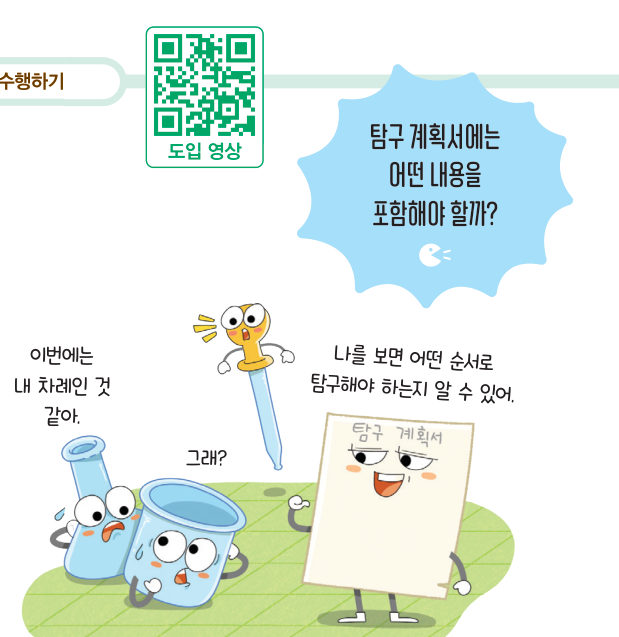
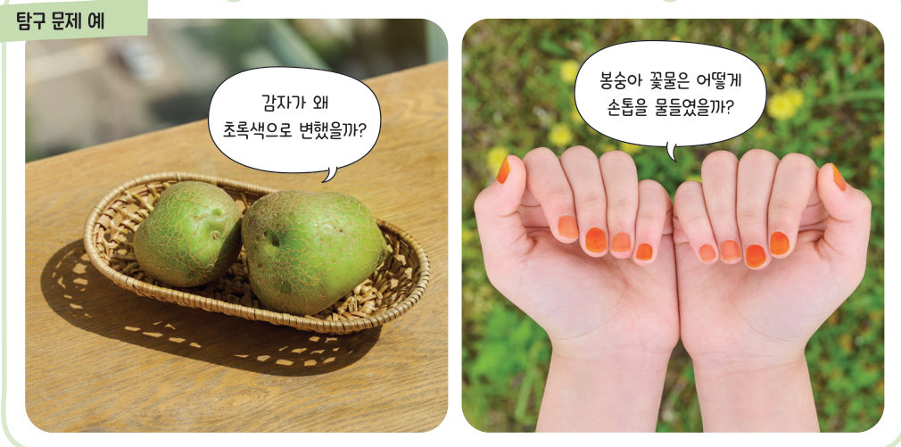
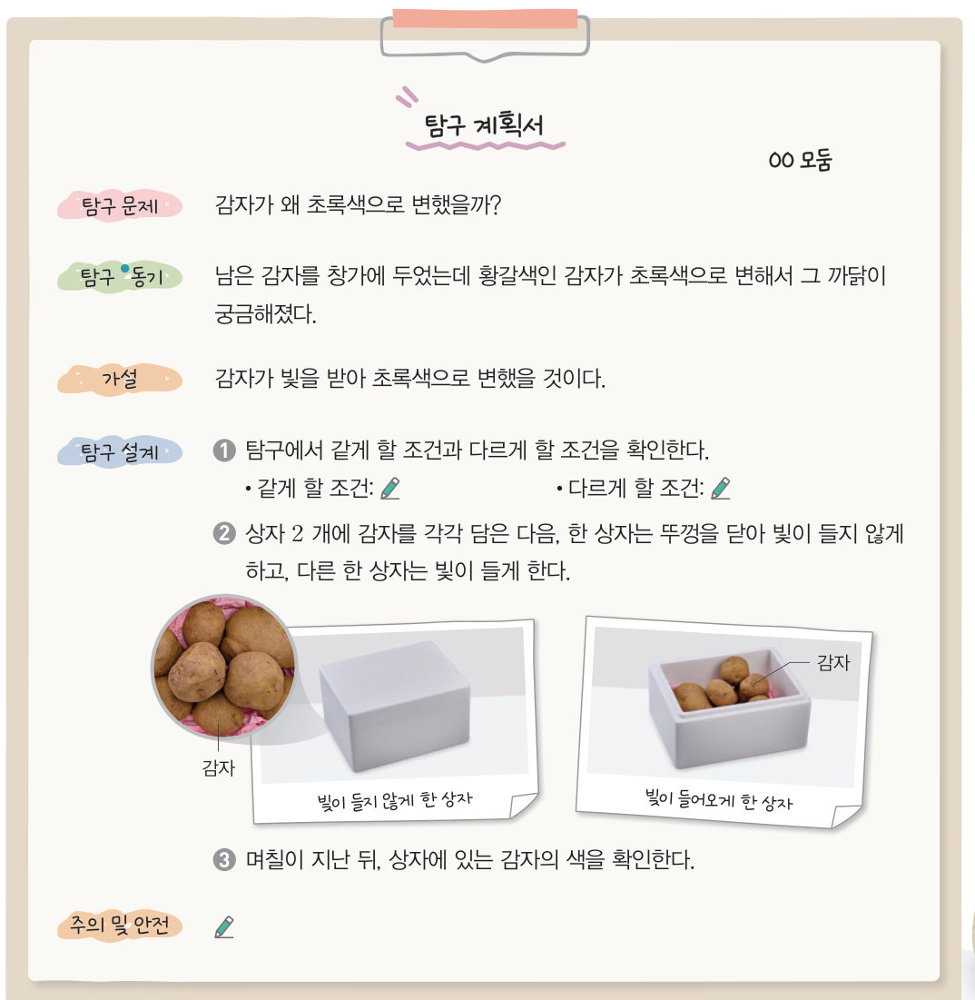

살아있는 교과서 · Ⅰ. 과학과 인류의 지속가능한 삶 · 1. 과학적 탐구 · 02 18~20쪽
탐구 문제를 발견하고
탐구 문제를 발견하고
탐구 계획서 작성하기
“나를 보면 어떤 순서로 탐구해야 하는지 알 수 있어.” 탐구 계획서에는 어떤 내용을 포함해야 할까? 주변의 궁금한 현상을 탐구 문제로 바꾸고, 가상 감자 상자로 계획을 시험해 본 뒤 우리 모둠의 탐구 계획서를 써 보자.
🎯 이 탐구를 수행하면 — 주변에서 탐구할 문제를 발견하고 탐구 계획서를 작성할 수 있다.
탐구 1~2문제 인식과 탐구 문제 만들기 18쪽
준비물 스마트 기기, 연필, 지우개, 공책
- 문제 인식 주변에서 일어나는 현상을 모둠별로 살펴보고 의문이 생기거나 자세히 알고 싶은 현상을 이야기한다.
- 탐구하고 싶은 현상을 고르고, 다음을 참고하여 이를 탐구 문제로 만든다.
탐구 문제를 만들 때 고려할 점 · 탐구할 내용이 분명하게 드러나는가? · 실제로 수행할 수 있는 탐구인가? · 정해진 기간 내에 끝낼 수 있는가? · 우리 몸에 해로운 영향을 주지 않는가?

판정 게임좋은 탐구 문제일까?
고려할 점 네 가지를 떠올리며, 중학교 모둠이 탐구하기에 알맞은 문제인지 판정해 보자. 알맞지 않다면 어떤 점이 문제인지 해설로 확인해요.
| 탐구 문제 | 판정 |
|---|---|
| ① 감자를 빛이 드는 곳에 두면 초록색으로 변할까? | |
| ② 우주는 어떻게 생겼을까? | |
| ③ 봉숭아 꽃잎에 백반을 넣으면 손톱이 더 진하게 물들까? | |
| ④ 수은 온도계를 깨서 수은이 어떻게 퍼지는지 관찰해 볼까? | |
| ⑤ 학교 소나무는 100 년 동안 얼마나 자랄까? | |
| ⑥ 물의 온도가 높을수록 설탕이 빨리 녹을까? |
✏️우리 모둠이 궁금한 현상과, 그것을 바꾼 탐구 문제를 써 보자.
탐구 3탐구 계획서 작성하기 19쪽

●동기 어떤 일이나 행동이 일어나게 하는 계기 · 부록 262쪽 탐구 계획서 작성법
1감자 탐구 계획서의 탐구 설계에서 다르게 할 조건은 이고, 같게 할 조건을 모두 고르면
가상 실험계획서대로 감자 상자 실험해 보기
두 상자의 조건을 정하고 날짜를 넘겨 보자. 감자 껍질이 얼마나 초록색으로 변했는지 색깔 막대로 비교할 수 있어요. 같게 할 조건(온도)이 다르면 결과를 믿을 수 있을까?
2온도를 같게 하고 10일이 지난 뒤, 초록색으로 변한 것은 이다. 따라서 가설은 .
작성우리 모둠의 탐구 계획서
모둠
| 탐구 문제 | |
| 탐구 동기 | |
| 가설 | |
| 같게 할 조건 | |
| 다르게 할 조건 | |
| 탐구 과정 | |
| 주의 및 안전 |
탐구 계획서에 꼭 들어가야 하는 요소를 모두 골라 보자.
정리해 볼까탐구 계획 평가하기 19쪽
다른 모둠의 탐구 계획서를 확인하고, 우리 모둠의 탐구 계획이 적절한지 평가해 보자. (매우 잘함 ☆, 잘함 ○, 보통 △)
| 평가 항목 | 확인 |
|---|---|
| 탐구하기에 알맞은 문제를 선정했는가? | |
| 탐구 계획서에 필요한 요소를 모두 포함했는가? |
더 해 보기 · 설계한 탐구 수행하기
작성한 탐구 계획서에 따라 탐구를 수행한다. 정리 탐구를 수행한 뒤, 탐구 계획서에서 어떤 점을 보완해야 할지 토의해 보자.
🧩 첫 번째 블록 · 힌트 조각 2 (19쪽)
탐구할 때는 먼저 탐구 문제를 만들고, 탐구 동기·가설·탐구 설계 내용 등을 포함하여 ( )을/를 작성한다.
스스로 정리하기탐구를 계획하는 방법 · 첫 번째 블록 찾기 20쪽
1과학적 탐구 방법
문제 인식 → → 탐구 설계 및 수행 → 자료 해석 → (가설이 틀리면 처음의 가설과 다른 가설로 수정한다.)
2탐구를 계획하는 방법
(1) 탐구 문제 설정: 주변에서 일어나는 현상을 살펴보고 의문이 생기거나 자세히 알고 싶은 현상을 골라, 여러 가지 조건을 고려하여 탐구 문제를 만든다.
(2) 탐구 계획 수립: 탐구 동기, 가설, 탐구 설계 내용 등을 생각하여 를 작성한다.
(2) 탐구 계획 수립: 탐구 동기, 가설, 탐구 설계 내용 등을 생각하여 를 작성한다.
🧩 첫 번째 블록 찾기 · 조각을 모아 답하기
첨단 과학기술이 나오기까지 인류는 어떻게 탐구해 왔을까?
조각 1 (17쪽) 과학적 탐구 방법에서 어떤 현상을 설명하려고 미리 가정을 하는데, 이를 가설 설정이라고 한다. · 조각 2 (19쪽) 탐구 문제를 만들고, 탐구 동기·가설·탐구 설계 내용 등을 포함하여 탐구 계획서를 작성한다.
나의 학습 확인하기1. 과학적 탐구 돌아보기 20쪽
| 평가 항목 | 스스로 평가 |
|---|---|
| 지식·이해 과학적 탐구 방법을 설명할 수 있는가? | |
| 과정·기능 일상생활에서 문제를 인식하고 탐구 계획을 세울 수 있는가? | |
| 가치·태도 과학적 탐구 방법에 흥미를 느끼고, 탐구 계획을 세울 때 협력적으로 소통했는가? |
💬이번 활동에서 알게 된 점, 어려웠던 점, 더 알아보고 싶은 점을 써 주세요.
제출학생 정보 · 제출하기
모든 활동을 마친 뒤 제출하면 전체가 한 번에 채점되고 피드백이 나타나요. 답안은 선생님 스프레드시트(중1 탭)에 기록돼요.